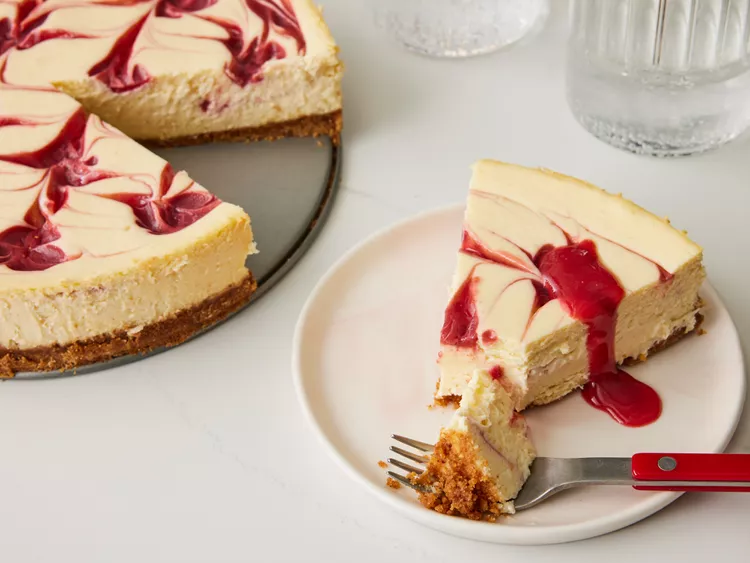

Strawberry Cheesecake

Description
This strawberry cheesecake has a graham cracker crust and creamy filling with swirls of sweetened strawberry sauce. It's perfect for any special occasion!
Ingredients
Crust:
- 1 1/4 cups graham cracker crumbs
- 1/3 cup butter, melted
- 1/4 cup white sugar
- 2 teaspoon ground cinnamon, or to taste
Filling:
- 2 (10 ounce) packages frozen sweetened sliced strawberries, thawed and drained
- 1 tablespoon cornstarch
- 3 (8 ounce) packages cream cheese, softened
- 1 (14 ounce) can sweetened condensed milk
- 1/4 cup lemon juice
- 1/2 teaspoon vanilla extract
- 3 large eggs
- 1 tablespoon water (Optional)